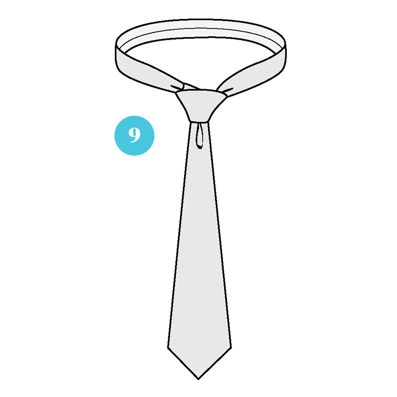

Start with the wide end of the tie on the right and the small end on the left. The tip of the small end should rest slightly above your belly-button. Only move the wide end.
Across the front over to the right.
Wide end over the small end to the left.
Up into the neck loop from underneath.
Under the small end and to the right.

Down through the loop you’ve just created in front.
Up to the center, towards neck loop.

Down through the loop you’ve created in the front.
Through the neck loop and to the left.